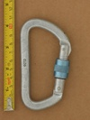
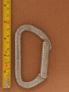
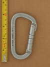
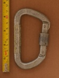
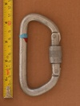
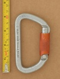
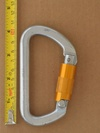
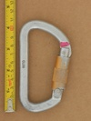
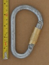

| Image | Summary | ||||
|---|---|---|---|---|---|
|  | Clog (Asymmetric D Screwlock) (2800) | asymmetric D | manual | gate stopped - unknown | strong classic Clog screwlock D |
 | Clog (Asymmetric D) (2100) | asymmetric D | n/a | n/a | early compact asym'd |
|  | Clog (Asymmetric D) (2200) v1 | asymmetric D | n/a | n/a | basic asym'd from prolific manufacturer |
|  | Clog (Asymmetric D) (2200) v2 | asymmetric D | n/a | n/a | classic compact asymmetric d with large solid gate |
 | Clog (Asymmetric D) (2200) v3 | asymmetric D | n/a | n/a | classic compact asymmetric d with large solid gate |
 | Clog (Asymmetric D) (3000) | asymmetric D | n/a | n/a | medium sized asym'd from prolific manufacturer |
 | Clog (HMS) (twistlock) | HMS | full-auto | twist | early twistlock from originator of the twistlock |
|  | Clog (OUTSIDE) | asymmetric D | manual | gate stopped - unknown | older screwlock with gate stops |
 | Clog (Oval) (flat profile) | oval | n/a | n/a | vintage oval - flat profile |
 | Clog (Oval) (round profile) | oval | n/a | n/a | vintage oval |
|  | Clog (Reverse Asymmetric D Screwlock) (2500) | asymmetric D | manual | nose stopped - longitudinal interferance | screwgate with unique lower sleeve stop |
 | Clog (Reverse Asymmetric D) (2500) | asymmetric D | n/a | n/a | basic asym'd from prolific manufacturer |
|  | Clog (twistlock D) (diagonal knurling - 2500) | asymmetric D | full-auto | twist | early twistlock, possibly even the first twistlock model |
|  | Clog (twistlock D) (straight knurling 120 deg throw) | asymmetric D | full-auto | twist | early twistlock from originator of the twistlock |
|  | Clog (twistlock D) (straight knurling 90 deg throw) | asymmetric D | full-auto | twist | early twistlock from originator of the twistlock |
|  | Clog (twistlock HMS) (Climb High) | HMS | full-auto | twist | early twistlock from originator of the twistlock |